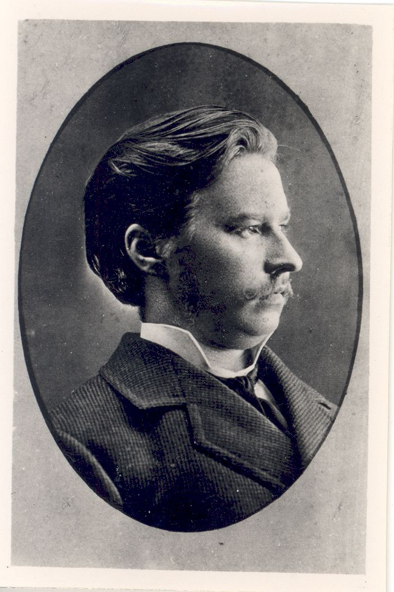
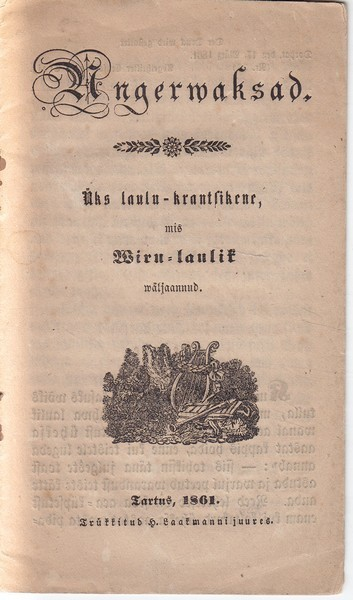
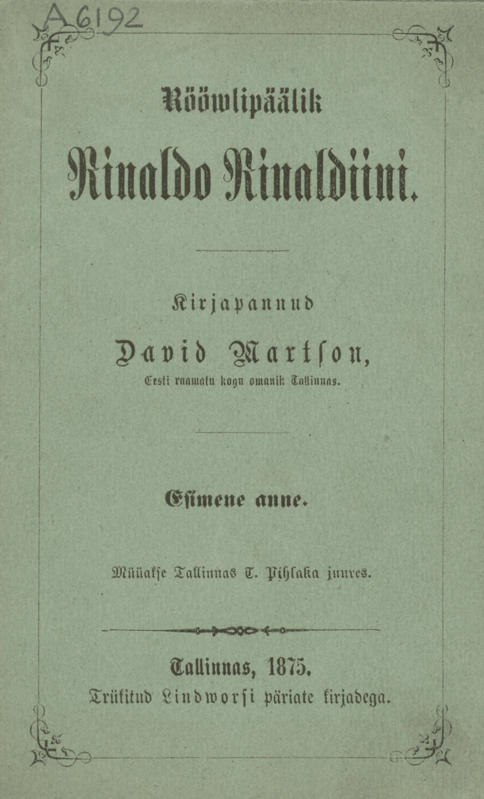
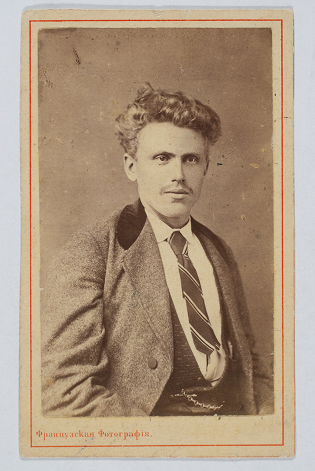

Perioodil 1850–1885 oli väga levinud tõlketehnika tekstide mugandamine, et luua talurahvale sobivat lugemisvara.
Saksakeelse materjali ümberpanek oli kui kirjutamise töötuba: paljud hilisemad algupärandite autorid, nagu Kreutzwald, Koidula ja Kitzberg, olid esmalt tõlkijad.
Samuti tõlkis hulk juhuslikke kirjamehi, kellest mõnda tuntaksegi vaid tõlgete kaudu.
Mugandamise laad varieerus: sageli kärbiti tekste, eestipärastati nimesid ja konteksti.
Näiteks võidi mugandada Inglismaal toimuva tegevusega tekstides maksevahendid rubladeks, Saksamaa külas elavatele inimestele anda eesti nimed ning eemaldada tekstiosad, mille mõistmine oleks eeldanud kõrgemat haridust, nagu näiteks ladina- või prantsuskeelsed tsitaadid.
Originaal muutus seega tihti pelgalt lähtepunktiks ja ideeallikaks, millele tõlkija oma teksti üles ehitas.
Selline tõlkija tundis end pigem looja ja autori kui kellegi teise mõtete edasiandjana.
Tõlgete stiil ja keelekasutus sõltus tõlkija keeleoskusest ja hariduslikust taustast, kuid ei peegeldanud alati tõlkija tegelikku võimekust.
Mugandusotsuste juures mängis lisaks keeleoskusele rolli soov arvestada ühelt poolt väheharitud ja alles kujuneva lugemisharjumusega lugejaga ning teiselt poolt ka majanduslikult väga piiravate kirjastamise võimalustega.
Eriti tugevalt vajas mugandamist tõlkeline teatrikirjandus, mis lisaks lugeja vastuvõtuvõimele pidi arvestama ka sobiva näitetrupi olemasoluga ja selle võimekusega.

August Kitzberg (1855–1927)

„Angerwaksad”, ilmunud 1861. aastal Tartus Laakmanni kirjastuses. Originaalide autoreid mainitakse sissejuhatuses, tõlkija Kreutzwald esineb pseudonüümiga „Wiru laulik”.
Saksa luuletajate Friedrich Schilleri, Johann Wolfgang von Goethe ja Gottfried August Bürgeri varaseid tõlkeid võeti nii tõlkija enda meisterlikkuse kui ka eesti keele kui tõlkevahendi tuleproovina. Sooviti näidata, et nende autorite kirjapandut on võimalik ka eesti keeles edasi anda.
Nii tõlkija oskuste kui eesti keele väljendusrikkuse tõestamise eriliseks proovikiviks oli Schilleri tõlkimine. Ehkki esimesed Schilleri tõlked olid ilmunud juba 1810. aastatel, ei olnud need sajandi keskpaigas eesti lugejate hulgas tuntud.
Luuletaja 100. sünniaastapäeva tähistamise aegu 1859. aastal kirjutas Jannsen Perno Postimehes, et Schillerit ei ole veel eesti keelde ümber pandud, kuna tema tekstid on „nattuke körged” ja „rasked makele ümberpanna ja arro sada” ning seetõttu eesti lugeja jaoks otsekui „satterkuub sahha tagga”.
Kuid juba 1860 ilmus Friedrich Eichhorni (1827–1896) tõlkes Schilleri „Laul kiriko kellast” ja 1861. aastal Friedrich Reinhold Kreutzwaldi kogumik „Angerwaksad”, mis sisaldab Schilleri ja Goethe luuletusi. Muuhulgas on kogumikus ka Kreutzwaldi versioon Schilleri kuulsast luuletusest „Ood rõõmule” („Ode an die Freude”, 1785), millest on saanud Euroopa Liidu hümni tekst.
1860. aastatel ilmus üksikuid Schilleri tõlkeid erinevates kogumikes, seega oli positiivse vastuse saanud küsimus, kas Schillerit on võimalik eesti keelde tõlkida. Jäi veel küsimus, kuidas tõlkida.
1870. aastal ilmunud uue „Kella laulu” (“Das Lied von der Glocke”, 1799) tõlke järel leidis tõlkijate Eichhorni ja Carl Eduard Malmi vahel saksakeelse ajakirjanduse veergudel aset tuline sõnasõda Schilleri tõlkimise teemal. Eichhorni retsensioon Malmile oli esimene omataoline detailne tõlkekriitika, milles heideti ette teksti lihtsustamist. Malm rõhutas seevastu lugejakesksust, väites, et Schillerit tuleb lihtsustada, et eesti lugeja tema luulest aru saaks.
19. sajandi viimases kolmandikus said populaarseks Itaalia olustikuga saksa rahvaraamatutest tõlgitud röövlilood, milles tegutsesid karismaatilised ja naistegelaste poolt armastatud õiglased või vähem õiglased kurikaelad. Röövlilood tõrjusid raamatuturul välja kannatavate naiste lood, millest seiklusi ja põnevust ihkav eesti lugeja tüdinenud oli.
Need said väga populaarseks, aga olid ühtlasi ka pidev sõimuobjekt, kuna rahvas armastas neid rohkem kui kohalike autorite algupärast loomingut ja tuumakamaks peetud tõlketekste.

David Martsoni tõlgitud „Rööwlipäälik Rinaldo Rinaldiini” (1875).
Anonüümne kriitik kirjutab Sakala lisalehes, et röövlilugusid lugedes läheb „süda läilaks” ja neis tekstides ei ole „mingisugust õpetust ehk kõige weiksemat tuuma tera sees” ning seetõttu on nad „meie rahwale selge kihwt” (1880).
Samuti kritiseeritakse saksa keele mõjusid tekstides, nagu näiteks saksa keele artiklite tõlkimist eesti keelde või saksa kõnekäändude sõnasõnalisi tõlkeid.
Edukaim röövlilugude maaletooja oli saksa ja vene keelest tõlkinud David Martson (1846–1892), kelle saksa keelest tõlgitud G. F. Buschi „Morando Morandini” (1873) ja C. A. Vulpiuse „Rinaldo Rinaldini” (1875) said sedalaadi kirjanduse sünonüümideks.

David Martson, „Rinaldo Rinaldini kirjutaja”.
Martson oli muuhulgas ka bibliofiil ja reklaamis ennast kui „Eesti raamatu kogu omanik”.
Hiljem lisanduvad Itaaliale veelgi kaugemad tegevuspaigad.
1880. aastatel ilmuvad August Ehrlichi tõlge Hermann Goedsche India-teemalisest romaanist ning Eduard Bornhöhe (1862–1923) tõlge „Rööwel ja möisnik”, mille tegevus toimub Ameerikas.
Hoolimata kerglaseks peetud sisust laiendasid need tekstid eesti lugeja geograafilisi ja ajaloolisi teadmisi.